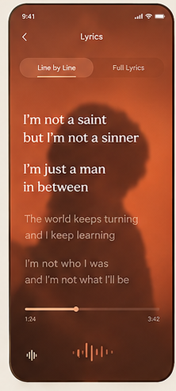
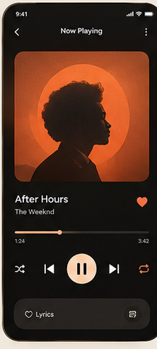
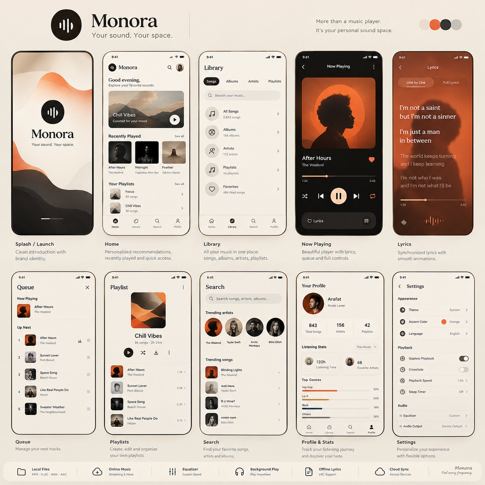

Local Files
Scans your device library and plays MP3, FLAC, WAV, AAC and more — with real album art and tags.
Monora is a warm, offline-first music player for Android. It plays the music already on your phone — MP3, FLAC, WAV, AAC — with a beautiful player, synced lyrics, a real equalizer and zero accounts.
56 MB · No ads · No tracking · Works fully offline


Built with Flutter, tuned for smooth 60 fps, and designed around one idea: your library, beautifully yours.
Scans your device library and plays MP3, FLAC, WAV, AAC and more — with real album art and tags.
Keep listening with the screen off. Lock-screen controls, headphone and Bluetooth handling built in.
Build playlists, play next, reorder the queue by drag, and shuffle anything in one tap.
A hardware-backed equalizer plus loudness boost, wired straight into the Android audio pipeline.
Drop a .lrc next to your song and Monora highlights every line in time with the music.
Cream-and-ember light theme, a full dark theme, five accent colors, and system sync.
Fall asleep to music — playback fades out on a timer of 5 to 60 minutes.
Top genres, listening time and favorites — computed on-device from what you actually play.
Play, pause and skip from the 4×1 widget — even with the app fully closed.
Songs melt into each other with a tunable crossfade, and silent gaps are skipped automatically.
Most Played and On Repeat playlists that build themselves from your real listening habits.
Browse your library by folder, keep chat-audio folders out, and share a beautiful listening card.
Ten considered screens — from the wave-animated splash to the immersive lyrics view.

Monora ships as a signed APK. Side-loading takes under a minute.
Grab Monora-1.1.0.apk from the GitHub release — the button below always points at the latest build.
When Android asks, allow “Install unknown apps” for your browser. This is standard for apps installed outside the Play Store.
Launch Monora, grant access to your music, and it scans your library instantly. That's it — your sound, your space.
Requires Android 7.0 or newer · ~56 MB
Monora has no account and no analytics. Your music, playlists, favorites and stats live on your device and nowhere else — nothing is uploaded, ever. The only network use is the entirely optional Last.fm scrobbling you explicitly sign into.